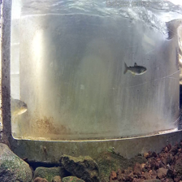

IDATG2206 — Fish/No Fish Detection
Course: Computer Vision (IDATG2206), 2025 • Group project
We explored classical image processing techniques to detect whether an image contains a fish: gradient-based edge detection with diffusion, Canny edges with contour detection, and template matching. The code intentionally keeps things simple and runnable on a local machine.
Highlights
- Gradient-based edges with optional diffusion (NumPy)
- Canny edges and contour detection (OpenCV)
- Template matching comparisons across methods
- Image preprocessing batch pipeline (OpenCV transforms)
Methods
- Gradient edges: compute fx, fy via
np.gradient; scale magnitude; threshold to binary edges. - Diffusion: forward Euler with Laplacian-like updates; tunable
λ,Δt, and iterations. - Canny + contours: blur → Canny →
findContoursand visualize outlines. - Template matching: compare cropped fish template against frames using OpenCV metrics.
- Preprocessing: brightness/contrast, colorspace conversions (HSV, YCrCb), flips, blur, rotate, resize, Laplacian.
Run locally
Place the code and images in the same folder. Install dependencies, then run each script:
# From the project folder with the images
# Required packages
pip install numpy matplotlib opencv-python scikit-image
# Run the scripts
python EdgeDetection.py
python Preprocessing.py
python TemplateMatching.py
Images used by the code: fishtank.png and croppedfish.png must be in the same directory as the scripts.
Notes
- Template matching works only when the template is an exact sub-image (scale/rotation/lighting sensitive).
- Preprocessing pipeline writes outputs to
preprocessed_images/. - For more robust detection, consider ML-based approaches (SSD MobileNet, YOLO) with labeled data.
Improvements
- Adopt ML-based detectors (e.g., YOLOv5/SSD) with a small labeled dataset to handle scale/rotation more robustly.
- Normalize lighting and color (CLAHE/white balance) before detection to reduce false negatives in darker frames.
- Introduce template invariance (multi-scale, rotation augmentation) or use feature-based matching (ORB/SIFT).
- Quantify performance with precision/recall on a validation split to guide threshold selection objectively.
- Automate preprocessing and evaluation with scripts and config files for reproducibility.